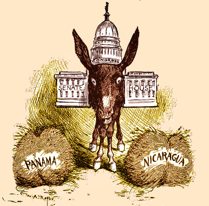

Decision-making, a complex path
To move forward, we must make decisions. However, when there is no clear rationale, decision-making becomes extremely difficult.
Even if there is! \(\longrightarrow\) Buridan’s Donkey
A donkey is placed exactly midway between two identical sacks of hay. Since both options are equally appealing, the donkey cannot decide which one to choose and eventually dies of starvation.
This paradox, traditionally associated with the French philosopher Jean Buridan 1, illustrates a fundamental limitation of purely rational choice:
- When no option dominates the others,
- and no preference can be established,
- indecision may replace action.

Although it was not its intention, it highlights that the maxim of always choosing the best option based on weak knowledge becomes problematic when faced with two options equally “better”, or “worse”.
Challenges in the decision-making process
In the process, one can find, among others:
- Choice overload, which can paralyze decision-making when many valid options exist.
- Pressure to choose or fear of failure, which tend to magnify hesitation and errors.
- Cognitive biases, which might distort our perception and reasoning.
- Conventional wisdom, which can fail or even lead to paradoxical outcomes.
“Grandpa once said: we’ve always done it this way, so it must be the right way.”
- Unfairness, since a solution that is not good for the whole system is not good enough.
- …
- Uncertainty, how can we make good decisions when the future is inherently unpredictable?
Strategic reasoning emerges as the step before decision-making, our way to prepare against complexity.
Optimization serves as the main tool for rational strategic reasoning.
Some well-known cognitive biases
-
Conformity Bias or Bandwagon Effect (Leibenstein 1950), which is the tendency to do or believe things because many other people do or believe the same.
-
Confirmation Bias (Wason 1960), which is the tendency to search for, interpret, favor, and recall information that confirms or supports one’s preexisting beliefs or hypotheses.
-
Gambler’s Fallacy (Tversky and Kahneman 1971), which is the mistaken belief that if a random event has occurred more (or less) frequently than expected in the past, it is less (or more) likely to occur in the future, e.g., “Tails, Tails, Tails… the next one must be Heads!”
-
Overconfidence Bias (Tversky and Kahneman 1974), which is the tendency for a person’s subjective confidence in their judgments to be reliably greater than their objective accuracy. Dunning–Kruger effect (Kruger and Dunning 1999), is a cognitive bias whereby people with low ability at a task overestimate their ability, failing to recognize their own incompetence.
Stochastic Programming
Stochastic programming is optimization under uncertainty, where uncertainty is explicitly modeled through random variables with known (or estimable) probability distributions.
In a standard optimization problem, we solve
$$\min_{x} \; f(x) \quad \text{s.t.} \quad x \in \mathcal{X}$$
Everything is deterministic.
In stochastic programming, we instead minimize the expected cost over the uncertainty:
$$\min_{x \in \mathcal{X}} \; \mathbb{E}_{\xi}\!\left[f(x,\xi)\right]$$
where \(\xi\) is a random parameter whose realization is unknown at decision time.
Example: Planning electricity production under uncertain demand
A power company must decide today how many generators to activate for tomorrow.
- Activating too many generators is expensive.
- Activating too few may lead to blackouts or emergency energy purchases.
- Tomorrow’s electricity demand is uncertain and depends on weather conditions, human activity, and renewable energy production.
In practice, \(\xi\) can be drawn from an estimated probability model and discretized into scenarios \(\Omega = \{\omega_1, \ldots, \omega_{|\Omega|}\}\) with probabilities \(p_\omega\), where \(\sum_{\omega \in \Omega} p_\omega = 1\), turning the expectation into a weighted sum: $$\mathbb{E}_{\xi}\!\left[f(x,\xi)\right] \approx \sum_{\omega \in \Omega} p_\omega \, f(x, \omega)$$
The challenge is therefore:
How can we make good decisions now, without knowing the future?
Key elements of Stochastic Programming
-
Stages: The timeline
\(t\)(discrete or continuous) of information.- First-stage (Here-and-Now): Decisions
\(x\)made before uncertainty\(\xi\)is revealed. - Second/Multi-stage (Wait-and-See): Recourse decisions made after observing
\(\xi\).
- First-stage (Here-and-Now): Decisions
-
Scenarios (
\(\Omega\)): Discrete representations of the future. Each\(\omega \in \Omega\)has probability\(p_\omega\), with\(\sum_{\omega \in \Omega} p_\omega = 1\). -
States (
\(S\)): Sufficient information\(s \in S\)summarizing all relevant information at a given stage to decide optimally going forward. Usually time-dependent\(s_t \in S_t\). -
Performance Measures. When optimization problems involve uncertainty, different modeling paradigms arise depending on how uncertainty is represented and how risk is handled.
-
Stochastic Programming (Risk-Neutral) The uncertainty is modeled through probability distributions, and the objective usually minimizes the expected value of the random cost
$$\mathbb{E}[f(x,\xi)].$$ -
Robust Optimization Instead of probabilities, uncertainty is represented through an uncertainty set
\(\mathcal{U}\)(e.g., box, ellipsoid, polytope). The goal is to obtain solutions that remain feasible for every realization\(\xi \in \mathcal{U}\)and optimize the worst-case performance. The general robust counterpart is:$$\min_{x} \left\{ \max_{\xi \in \mathcal{U}} f(x,\xi) \right\}.$$Equivalently, robust optimization can be interpreted as:
- minimizing the worst-case cost, or
- maximizing the worst-case performance (maximin approach).
Advantages
- Does not require probability distributions.
- Provides protection against adverse scenarios.
Disadvantages
- May be overly conservative, since it protects against extremely unlikely scenarios.
-
Risk Measures (Risk-Averse Stochastic Programming)
Risk measures provide an intermediate framework between risk-neutral stochastic programming and worst-case robust optimization. Common examples include:-
\(VaR_\alpha\)(Value at Risk) The\(\alpha\)-quantile of the loss distribution. It measures the threshold such that losses exceed it with probability at most\(1-\alpha\).Limitation: VaR is not coherent (it is not subadditive) and ignores the severity of losses beyond the quantile. It is NP-hard to compute.
-
\(CVaR_\alpha\)(Conditional Value at Risk)
The expected loss conditioned on the loss exceeding the corresponding VaR level. CVaR is a coherent and convex risk measure, which makes it particularly attractive for optimization. A standard representation is:
-
$$CVaR_{\alpha}(X) = \frac{1}{1-\alpha} \int_{\alpha}^{1} VaR_{u}(X)\,du$$
where:
\(X\)is the random variable of losses,\(VaR_{\alpha}(X)\)is the quantile at level\(\alpha\),\(CVaR_{\alpha}(X)\)represents the average loss in the most extreme tail.
Equivalently, when the distribution is continuous:
$$CVaR_{\alpha}(X) = \mathbb{E}\big[X \mid X \ge VaR_{\alpha}(X)\big]$$
and it is interpreted as the expected loss conditioned on being in the worst \(1-\alpha\) percent of scenarios. There is also the optimization formulation by Rockafellar and Uryasev:
$$CVaR_{\alpha}(X) = \min_{t\in\mathbb{R}} \left\{ t+\frac{1}{1-\alpha}\mathbb{E}\big[(X-t)^+\big] \right\}$$
where the optimal \(t^\star\) coincides with \(VaR_\alpha(X)\).
Relationship between approaches:
- As
\(\alpha \to 1\), optimizing CVaR approaches the worst-case robust optimization paradigm. - As
\(\alpha \to 0\), CVaR behaves closer to a risk-neutral criterion, as\(CVaR\)converges to\(\mathbb{E}\big[f(x,\xi)\big]\).
| Approach | Performance Measure | Expression to \(min\) |
|---|---|---|
| Stochastic Programming (risk-neutral) | Expected value | \(\mathbb{E}[f(x,\xi)]\) |
| Robust Optimization | Worst-case performance | \(\displaystyle \max_{\xi \in \mathcal{U}} f(x,\xi)\) |
| Risk-Averse Stochastic Programming | VaR / CVaR | \(\text{VaR}_\alpha(f(x,\xi)), \text{CVaR}_\alpha(f(x,\xi))\) |
Two-Stage Stochastic Programming
This is the most common formulation:
We fix \(x\), then “correct” with \(y\) after \(\xi\) happens.
Mathematical Formulation: $$\min_{x \in \mathcal{X}} \ c^\top x + \mathcal{Q}(x)$$ where \(\mathcal{Q}(x) = \mathbb{E}_\xi [Q(x, \xi)]\) is the Expected Recourse Function.
For a specific realization \(\xi = (q, h, T, W)\), the second-stage problem is: $$Q(x, \xi) = \min_{y} \left\{ q^\top y \mid Wy = h - Tx, \ y \ge 0 \right\}$$
Computational challenges
A major difficulty is the curse of dimensionality, since the number of scenarios may grow exponentially with the dimension of the uncertainty space or the number of stages.
As a consequence, solving stochastic or robust optimization models directly can become computationally prohibitive. Several algorithmic strategies are commonly used to address this issue:
-
Scenario Generation and Reduction
Approximate the uncertainty distribution using a manageable set of representative scenarios.
Scenario reduction techniques often rely on:- clustering methods,
- probability metrics,
- or importance sampling approaches.
-
Decomposition Methods
Large-scale stochastic programs are frequently solved through decomposition techniques that exploit the problem structure.
Common examples include:
- the L-shaped method (the stochastic extension of Benders decomposition),
- classical Benders decomposition,
- and other cutting-plane approaches.
These methods separate first-stage decisions from recourse subproblems, significantly improving tractability.
-
Sampling-Based Approximations
A widely used framework is the Sample Average Approximation (SAA) method, where the expectation is approximated using a finite sample of scenarios:
$$\mathbb{E}[f(x,\xi)] \approx \frac{1}{N}\sum_{i=1}^{N} f(x,\xi_i)$$The resulting optimization problem can then be solved as a deterministic large-scale program.
Multistage Stochastic Programming (MSP): Scenario Trees
In many real-world applications, decisions are not taken only once, but sequentially over time as uncertainty is progressively revealed.
A typical decision process follows the structure
$$x_0 \to \xi_1 \to x_1 \to \xi_2 \to x_2 \to \xi_3 \to \dots$$
where:
- decisions
\(x_t\)are made at stage\(t\), - uncertainty realizations
\(\xi_t\)are observed over time.
The central question in Multistage Stochastic Programming (MSP) is:
“What decisions should be taken today and in the future, depending on how uncertainty evolves?”
Future uncertainty is commonly represented through a scenario tree:
- Each node corresponds to a specific state of information.
- Branches represent possible future realizations of uncertainty.
- Each path from the root to a leaf defines a complete scenario.
A key modeling principle is non-anticipativity:
Decisions at stage
\(t\)can only depend on information revealed up to time\(t\), and cannot use future information.
Therefore, future decisions are modeled as functions of the observed uncertainty history:
$$x_t = x_t(\xi_1,\dots,\xi_t)$$
This means that each node of the scenario tree may have its own decision variable, but only based on currently available information.
Mathematical Formulation
A generic multistage stochastic program can be written as
$$\min \mathbb{E}\left[\sum_{t=0}^{T} c_t(x_t,\xi_t)\right]$$
subject to \(x_t \in X_t(x_{t-1},\xi_t)\)
where:
\(x_t\)denotes the decision at stage\(t\),\(\xi_t\)represents the uncertainty observed at stage\(t\),\(c_t(x_t,\xi_t)\)is the stage cost,\(X_t(x_{t-1},\xi_t)\)defines the feasible region,- and non-anticipativity constraints enforce information consistency.
Computational Challenge
The main difficulty in MSP is the exponential growth of the scenario tree.
For example, with:
- 10 stages, and
- 3 branches per stage,
the total number of scenarios becomes
$$3^{10} = 59,\!049$$
This phenomenon is another manifestation of the curse of dimensionality, making multistage stochastic optimization computationally demanding.
Stochastic Dynamic Programming (SDP)
Stochastic Dynamic Programming (SDP) is a methodology for solving sequential decision-making problems under uncertainty.
Its goal is to determine an optimal decision policy when:
- decisions are taken over multiple stages,
- the system evolves randomly over time,
- and current actions influence both immediate costs and future system evolution.
SDP combines optimization theory, stochastic processes, and dynamic programming.
Main Components of an SDP Model
- State Space. The state
\(s_t \in \mathcal{S}\)contains all information necessary to make decisions at\(t\). - Action Space. At each state, a feasible action can be selected:
\(a_t \in \mathcal{A}(s_t)\). - Transition Dynamics. The system evolves probabilistically:
\(P[s' \mid s, a]\)is the probability of reaching state\(s'\)after taking action\(a\)in state\(s\). - Cost or Reward Function. Each decision generates an immediate cost (or reward)
\(c(s, a)\). - Time Horizon. The optimization horizon may be finite (
\(t = 1, \ldots, T\)), infinite discounted, or infinite average-cost. - Decision Policy. A policy
\(\pi : \mathcal{S} \to \mathcal{A}\)specifies which action to take in every possible state. The objective is to compute an optimal policy\(\pi^*\)minimizing the expected long-term cost.
Example: Optimal Stock Selling
An investor holds one unit of a risky asset purchased at price \(p_0\) and must decide, at each of \(T\) trading days, whether to sell or to wait. The objective is to maximize the expected net gain at the moment of sale.2
State space. The state at time \(t\) is the pair
$$s_t = (p_t,\; T - t) \in \mathbb{R}_{+} \times \{0, 1, \ldots, T\},$$ where \(p_t\) denotes the current price and \(T - t\) the number of days remaining. This pair contains all information needed for future decisions, the history of past prices is irrelevant (Markov property).
Action space. At each state the investor chooses one of two feasible actions:
$$a_t \in \mathcal{A}(s_t) = \{\texttt{sell},\; \texttt{wait}\}.$$
The action \(\texttt{sell}\) is absorbing: once executed, the problem terminates. At \(t = T\) only \(\texttt{sell}\) is feasible.
Transition dynamics. If the investor waits, the price evolves according to a geometric random walk:
$$p_{t+1} = p_t \exp(\mu + \sigma\,\varepsilon_t), \qquad \varepsilon_t \overset{\text{i.i.d.}}{\sim} \mathcal{N}(0,1),$$
where \(\mu \in \mathbb{R}\) and \(\sigma > 0\) are known parameters.
Selling terminates the process, so no transition occurs. The transition kernel is therefore
$$P(s' \mid s_t, \texttt{wait}) = P\!\left(p_{t+1} ,\; T{-}t{-}1 \mid p_t,\; T{-}t\right),$$
fully determined by the log-normal distribution above.
Cost/reward function. The reward is realised only upon selling:
$$c(s_t, a_t) = \begin{cases} p_t - p_0 & \text{if } a_t = \texttt{sell}, \\ 0 & \text{if } a_t = \texttt{wait}.\end{cases}$$
Time horizon. The horizon is finite and deterministic \(t = 0, 1, \ldots, T\), with a forced sale at \(t = T\).
Decision policy. A (deterministic, stationary) policy maps each state to an action:
$$\pi : \mathbb{R}_{+} \times \{0,\ldots,T\} \to \{\texttt{sell}, \texttt{wait}\}$$
Example of a policy. A natural candidate is the threshold policy \(\pi_\theta\), parametrised by a vector \(\theta = (\theta_0, \theta_1, \ldots, \theta_T) \in \mathbb{R}_{+}^{T+1}\):
$$\pi_\theta(p_t, T{-}t) = \begin{cases} \texttt{sell} & \text{if } p_t \geq \theta_{T-t}, \\ \texttt{wait} & \text{if } p_t < \theta_{T-t}. \end{cases}$$
Intuitively, \(\theta_k\) is the minimum price the investor is willing to accept when \(k\) days remain. As the deadline approaches, the investor becomes less selective: one would expect \(\theta_0 \leq \theta_1 \leq \cdots \leq \theta_T\), since waiting is less valuable with fewer days left. For instance, with \(T = 3\) and thresholds \(\theta = (105, 110, 115, 120)\) (in monetary units), the policy reads:
Days remaining \(k\) |
Sell if price \(\geq\) |
|---|---|
| 0 (deadline) | 105 |
| 1 | 110 |
| 2 | 115 |
| 3 | 120 |
This policy is feasible but not necessarily optimal; it serves to illustrate the structure of a policy as a complete decision rule defined over the entire state space.
Relationship Between Multistage Stochastic Programming (MSP) and Stochastic Dynamic Programming (SDP)
The relationship between Multistage Stochastic Programming (MSP) and Stochastic Dynamic Programming (SDP) is very deep. In essence, both frameworks model sequential decision-making problems under uncertainty, but they do so from different perspectives.
Both approaches consider:
- decisions taken over time,
- uncertainty progressively revealed,
- adaptive (non-anticipative) decisions,
- and a global expected objective.
The main difference lies in how decisions are represented:
- In MSP, the variables are scenario-dependent decisions
\(x_t^\omega\)meaning that each node (or scenario) of the tree has its own decision variable. - In SDP, the solution is a policy
\(\pi(s)\)that maps each state to an action.
Thus:
- MSP focuses on optimizing a large deterministic equivalent problem,
- whereas SDP focuses on characterizing an optimal decision rule.
| Aspect | Multistage Stochastic Programming (MSP) | Stochastic Dynamic Programming (SDP) |
|---|---|---|
| Representation | Scenario tree | States and transitions |
| Core methodology | MILP / convex optimization | Bellman equations |
| Decision variables | Decisions per stage and scenario | State-dependent policy |
| Uncertainty representation | Discretized scenarios | Probabilistic transition |
| Solution philosophy | “Optimize one large problem” | “Solve recursively” |
Bellman’s Principle in SDP
Instead of optimizing over the entire scenario tree simultaneously, SDP decomposes the problem recursively using the Bellman Principle of Optimality:
An optimal policy has the property that, regardless of the initial state and decision, the remaining decisions must themselves constitute an optimal policy with respect to the resulting state.
For finite-horizon SDP, this yields the Bellman equation:
$$V_t(s) = \min_{a \in \mathcal{A}(s)} \left\{ c(s, a) + \mathbb{E}\left[V_{t+1}(s') \mid s, a\right] \right\}$$
with terminal condition \(V_{T+1} = 0\), where \(V_t(s)\) is the optimal expected cost-to-go from state \(s\) at time \(t\).
Most Common Solution Methods
1. Backward recursion. Starting from the terminal stage and recursively moving backward:
- Initialize
\(V_T(s)\). - Compute
\(V_t(s)\)for\(t = T-1, \ldots, 1\).
- Advantage: Produces an exact optimal solution.
- Limitation: Suffers from the curse of dimensionality as the state space grows.
2. Value Iteration. The value function is updated iteratively:
$$V^{k+1}(s) = \min_a \left\{ c(s, a) + \gamma \, \mathbb{E}\left[V^k(s')\right] \right\}$$
until convergence, where \(\gamma \in [0,1)\) is a discount factor.
3. Policy Iteration. Alternates between:
- Policy evaluation: compute
\(V^\pi\)for a fixed policy\(\pi\). - Policy improvement: update
\(\pi\)greedily from\(V^\pi\).
Compared to Value Iteration, Policy Iteration often converges faster, though each iteration is more expensive.
Special Case: Markov Decision Processes (MDP)
In the general formulation, the transition law may depend on the full history of states and actions. However, in many practical settings the state \(s_t\) already encodes all relevant past information, so that:
$$P\left[S_{t+1} = s' \mid S_0 = s_0, \ldots, S_t = s, A_t = a\right] = P_a(s, s')$$
This is known as the Markov property. When it holds, the system is called a Markov Decision Process (MDP), a special case that is considerably more tractable and therefore widely studied.
Why is the Markov property important?
Without it, the value function would need to depend on the entire history \(\xi_{[t]} = (\xi_1, \ldots, \xi_t)\), making the state space grow exponentially with time. When the Markov property holds, the current state \(s_t\) is a sufficient statistic for the future, and we only need to track a single state variable.
If an application does not naturally satisfy the Markov property, it is often possible to recover it by augmenting the state (e.g., including recent history or summary statistics as part of \(s_t\)), at the cost of a larger state space.
Formally, an MDP is defined as a 5-tuple \(\mathcal{M} = \langle S, A, P, R, \gamma \rangle\) where:
\(S\)is the state space.\(A\)is the action space.\(P_a(s, s') = P[S_t = s' \mid S_{t-1} = s, A_{t-1} = a]\)is the transition probability from state\(s\)to state\(s'\)under action\(a\), satisfying\(\sum_{s'} P_a(s, s') = 1\)for all\(s \in S,\ a \in A\).\(R_a(s, s') = \mathbb{E}[R_t \mid S_{t-1} = s, A_{t-1} = a, S_t = s']\)is the expected reward received when transitioning from state\(s\)to state\(s'\)via action\(a\).\(\gamma \in [0, 1)\)is the discount factor.
The rewards indicate how well an agent is doing at a step \(t\), but, in particular, the reward signal is not the place to impart to the agent prior knowledge about how to achieve what we want it to do. For example, a chess playing agent should be rewarded only for actually winning, not for achieving subgoals such as taking its opponents pieces or gaining control of the center of the board. If achieving these subgoals were rewarded, then the agent might find a way to achieve them, without achieving the real goal, e.g. it might find a way to take the opponent’s pieces even at the cost of losing the game.
The return formalizes the long-run objective:
$$G_t = \sum_{k=t+1}^{T} \gamma^{k-t-1} R_k$$
including the possibility that \(T = \infty\) or \(\gamma = 1\) (but not both).
All goals reduce to maximizing the expected return \(\mathbb{E}[G_t]\).
Given a deterministic policy \(\pi(s) = a\), the value functions are:
$$V^\pi(s) \doteq \mathbb{E}_\pi\left[\sum_{k=0}^{\infty} \gamma^k R_{t+k+1} \;\middle|\; S_t = s\right], \quad \forall s \in S$$
$$Q^\pi(s, a) \doteq \mathbb{E}_\pi\left[\sum_{k=0}^{\infty} \gamma^k R_{t+k+1} \;\middle|\; S_t = s, A_t = a\right]$$
These satisfy the Bellman consistency equations:
$$V^\pi(s) = \sum_{s'} P_{\pi(s)}(s, s') \left( R_{\pi(s)}(s, s') + \gamma V^\pi(s') \right)$$
$$Q^\pi(s, a) = \sum_{s'} P_a(s, s') \left( R_a(s, s') + \gamma Q^\pi(s', \pi(s')) \right)$$
The optimal value functions \(V^*(s) = \max_\pi V^\pi(s)\) and \(Q^*(s,a) = \max_\pi Q^\pi(s,a)\) satisfy the Bellman optimality equations:
$$V^*(s) = \max_{a \in A} \sum_{s'} P_a(s, s') \left( R_a(s, s') + \gamma V^*(s') \right)$$
$$Q^*(s, a) = \sum_{s'} P_a(s, s') \left( R_a(s, s') + \gamma \max_{a' \in A} Q^*(s', a') \right)$$
For finite MDPs, these equations have a unique solution, and the optimal policy can be recovered directly as:
$$\pi^*(s) = \arg\max_{a \in A} \left\{ \sum_{s'} P_a(s, s') \left( R_a(s, s') + \gamma V^*(s') \right) \right\}$$
The solution methods presented above (Backward DP, Value Iteration, Policy Iteration) all apply to the MDP setting and exploit its Markov structure efficiently.
Computational challenges
While Bellman’s principle is mathematically elegant, it also faces the problem of the curse of dimensionality. If the state vector \(s_t\) contains multiple dimensions (e.g., a portfolio with 30 assets, macroeconomic indicators, regime-switching variables), grid discretization becomes exponentially intractable (\(O(N^d)\)).
-
Approximate Dynamic Programming (ADP). Instead of computing the exact value function
\(V(s)\)for every state, function approximators (parametric regressions or neural networks) are used to estimate the cost-to-go. -
Advanced link: Continuous Time. For continuous-state models, Bellman’s principle serves as the mathematical bridge to Optimal Control Theory, leading formally to the Hamilton–Jacobi–Bellman (HJB) partial differential equations.
Finite MDPs and Linear Programming
The nonlinear \(\max\) operator appearing in the Bellman optimality equation can be avoided by reformulating a finite Markov Decision Process (MDP) as a linear optimization problem. Let \(\alpha(s) > 0\) denote a strictly positive state relevance distribution satisfying
$$\sum_{s \in S} \alpha(s) = 1.$$
This distribution weights the relative importance of states in the objective function.
Primal Linear Programming Formulation
The primal formulation seeks the smallest value function consistent with the Bellman optimality inequalities. Intuitively, the optimal value function is the minimal vector that upper bounds the expected discounted return obtainable from every state-action pair.
\begin{aligned} \min \quad & \sum_{s \in S} \alpha(s)\, V(s) \\ s.t. \quad & V(s) \ge R(s,a) + \gamma \sum_{s' \in S} P(s' \mid s,a)\, V(s') \quad \forall s \in S,\ \forall a \in A. \end{aligned}
Equivalently, the constraints may be written as
$$V(s) - \gamma \sum_{s' \in S} P(s' \mid s,a)\, V(s') \ge R(s,a),$$
which emphasizes the linear structure of the model.
Dual Linear Programming Formulation
Associated with the primal problem is its dual linear program. The dual variables \(x(s,a)\) can be interpreted as discounted state-action occupancy measures, representing the expected discounted number of times action \(a\) is selected in state \(s\) under a given policy.
The dual formulation maximizes the total expected discounted reward while enforcing probability flow conservation across states.
\begin{aligned} \max \quad & \sum_{s \in S} \sum_{a \in A} x(s,a)\, R(s,a) \\ s.t. \quad & \sum_{a \in A} x(s',a) - \gamma \sum_{s \in S} \sum_{a \in A} P(s' \mid s,a)\, x(s,a) = \alpha(s') \quad \forall s' \in S, \\ & x(s,a) \ge 0 \quad \forall s \in S,\ \forall a \in A. \end{aligned}
Notation
The terminology and notation for MDPs are not entirely settled. There are two main streams — one focuses on maximization problems from contexts like economics, using the terms action, reward, value, and calling the discount factor \(\beta\) or \(\gamma\), while the other focuses on minimization problems from engineering and navigation, using the terms control, cost, cost-to-go, and calling the discount factor \(\alpha\). In addition, the notation for the transition probability varies.
| in this article | alternative | comment |
|---|---|---|
action \(a\) |
control \(u\) |
|
reward \(R\) |
cost \(g\) |
\(g\) is the negative of \(R\) |
value \(V\) |
cost-to-go \(J\) |
\(J\) is the negative of \(V\) |
policy \(\pi\) |
policy \(\mu\) |
|
discounting factor \(\gamma\) |
discounting factor \(\alpha\) |
Case Study: The Knapsack Problem
The Bellman equation is the foundation of Dynamic Programming and provides a natural framework for solving Knapsack Problems in both deterministic and stochastic settings, modeling sequential decision-making under uncertainty.
Below, we describe how the Bellman equation is applied to both variants of the problem.
1. Deterministic Knapsack Problem
In the classical knapsack problem, the objective is to maximize the total value of the items packed into a knapsack with maximum capacity \(W\). We are given \(N\) items, where each item \(i\) has a weight \(w_i\) and value \(v_i\).
The Bellman equation for this model defines the state as the remaining capacity \(w\) of the knapsack after considering the first \(i\) items:
$$V(i,w)=\max\left(V(i-1,w),\;v_i+V(i-1,w-w_i)\right)$$
Interpretation of the States
\(V(i-1,w)\): Item\(i\)is not included. The accumulated value from previous items is preserved.\(v_i + V(i-1,w-w_i)\)(only if\(w \geq w_i\)): Item\(i\)is included. Its value\(v_i\)is added, and the remaining capacity decreases by\(w_i\).
2. Stochastic Knapsack Problem (Stochastic Programming)
In stochastic programming, some problem parameters, such as item weights, item values, or even the total knapsack capacity, are not known with certainty, but instead follow probability distributions.
The Bellman equation is then adapted into a Markov Decision Process (MDP) framework, where the objective becomes maximizing the expected value.
The precise structure of the Bellman equation depends on which elements are stochastic.
Case A: Stochastic Weights
Suppose the true weight \(W_i\) of an item is a random variable that is only revealed when attempting to place the item into the knapsack. The Bellman equation incorporates the expected value over the reward function \(\mathcal{R}\):
$$V(i,w) = \max \left\{ V(i-1,w), \; \mathbb{E}_{W_i} \left[ \mathcal{R}(i, w, W_i) \right] \right\}$$
Where the reward inside the expectation accounts for a safety boundary:
$$\mathcal{R}(i, w, W_i) = \begin{cases} v_i + V(i-1, w - W_i) & \text{si } W_i \le w \\ \text{Penalty} & \text{si } W_i > w \end{cases}$$
If the random weight exceeds the remaining capacity \(w\), a penalty is incurred.
Case B: Random Arrival of Items (Online Knapsack Problem)
In the online version of the knapsack problem, items arrive sequentially according to a probability distribution.
At each step:
- an item with weight
\(w_i\)and value\(v\)is revealed, - and the decision maker must immediately accept or reject it before observing future items.
If there are \(t\) remaining periods (or future arrivals) and the current available capacity is \(w\), the Bellman equation becomes:
$$V(t,w)=\mathbb{E}_{(v,w_i)}\left[\max\left(V(t-1,w),\;v+V(t-1,w-w_i)\right)\right]$$
Here, the expectation \(\mathbb{E}\) is taken over all possible item types \((v,w_i)\) that may arrive in the next stage.
This formulation naturally captures:
- sequential decision-making,
- uncertainty in future arrivals,
- and the trade-off between immediate reward and preserving future capacity.
Case Study: Solving the Procrastination Loop MDP
We illustrate the MDP framework with a concrete example. The system is defined as:
$$\mathcal{M} = \langle \mathcal{S}, \mathcal{A}, p, r, \gamma \rangle$$
- State space:
\(\mathcal{S} = \{\text{NETFLIX},\ \text{NAP},\ \text{STUDY}\}\) - Action space:
\(\mathcal{A} = \{\text{Strive},\ \text{Relax}\}\) - Discount factor:
\(\gamma = 0.9\)
Transition and reward dynamics:
\(s\) |
\(a\) |
\(s'\) |
\(P[s' \mid s, a]\) |
\(r(s, a, s')\) |
Description |
|---|---|---|---|---|---|
| NETFLIX | Strive | STUDY | 0.4 | +5 | Breaking the procrastination loop |
| NETFLIX | 0.6 | −10 | Failed attempt to work | ||
| NETFLIX | Relax | NETFLIX | 0.7 | −5 | Guilt-ridden binge-watching |
| NAP | 0.3 | +1 | Shifting from screens to actual rest | ||
| NAP | Strive | STUDY | 0.5 | +8 | Waking up productive |
| NETFLIX | 0.5 | −2 | Waking up and opening a streaming app | ||
| NAP | Relax | NAP | 0.1 | +2 | Enjoying a cozy rest extension |
| NETFLIX | 0.9 | −4 | Oversleeping into procrastination | ||
| STUDY | Strive | STUDY | 0.9 | +10 | Deep work / Flow state |
| NETFLIX | 0.1 | −1 | Sudden burnout distraction | ||
| STUDY | Relax | NETFLIX | 0.5 | −8 | Giving up on studying to binge-watch |
| NAP | 0.5 | +3 | Strategic break to recover energy |
We compress to expected state-action rewards \(r(s, a) = \sum_{s'} P[s' \mid s, a]\, r(s, a, s')\):
- NETFLIX: Strive:
\(0.4(5) + 0.6(-10) = -4.0\)Relax:\(0.7(-5) + 0.3(1) = -3.2\) - NAP: Strive:
\(0.5(8) + 0.5(-2) = 3.0\)Relax:\(0.1(2) + 0.9(-4) = -3.4\) - STUDY: Strive:
\(0.9(10) + 0.1(-1) = 8.9\)Relax:\(0.5(-8) + 0.5(3) = -2.5\)
The Bellman optimality equations are:
$$V(N) = \max \begin{cases} \text{Strive:} & -4.0 + 0.9\left[0.4\,V(D) + 0.6\,V(N)\right] \\ \text{Relax:} & -3.2 + 0.9\left[0.7\,V(N) + 0.3\,V(Z)\right] \end{cases}$$
$$V(Z) = \max \begin{cases} \text{Strive:} & 3.0 + 0.9\left[0.5\,V(D) + 0.5\,V(N)\right] \\ \text{Relax:} & -3.4 + 0.9\left[0.1\,V(Z) + 0.9\,V(N)\right] \end{cases}$$
$$V(D) = \max \begin{cases} \text{Strive:} & 8.9 + 0.9\left[0.9\,V(D) + 0.1\,V(N)\right] \\ \text{Relax:} & -2.5 + 0.9\left[0.5\,V(N) + 0.5\,V(Z)\right] \end{cases}$$
We solve by assuming Strive is optimal everywhere and dropping the \(\max\) operator, then verifying consistency a posteriori. This yields the linear system:
$$0.46\,V(N) - 0.36\,V(D) = -4.0$$ $$-0.09\,V(N) + 0.19\,V(D) = 8.9$$
Isolating \(V(N)\) from the first equation:
$$V(N) = \frac{-4.0 + 0.36\,V(D)}{0.46} \approx -8.696 + 0.783\,V(D)$$
Substituting into the second:
$$0.19\,V(D) - 0.09\left(-8.696 + 0.783\,V(D)\right) = 8.9$$ $$0.1196\,V(D) = 8.117 \implies \mathbf{V(D) \approx 67.89}$$
Back-substituting:
$$\mathbf{V(N) \approx 44.44}, \qquad V(Z) = 3.0 + 0.45(67.89) + 0.45(44.44) \implies \mathbf{V(Z) \approx 53.55}$$
Verification: substituting these values into all Relax branches confirms they yield strictly lower values, proving that Strive is the unique optimal action in every state.
Now, in order to solve this problem using the Linear Programming approach, we define 3 continuous decision variables representing the state values (\(V_s \in \mathbb{R}\)):
\(V_N\): Expected discounted long-term value starting from state NETFLIX.\(V_Z\): Expected discounted long-term value starting from state NAP.\(V_D\): Expected discounted long-term value starting from state STUDY.
We next introduce the mathematical model. Since \(\alpha(s) = \frac{1}{3}\) is a positive constant factor, minimizing \(\frac{1}{3}V_N + \frac{1}{3}V_Z + \frac{1}{3}V_D\) is mathematically equivalent to minimizing their direct summation. Moving all variable parameters to the Left-Hand Side (LHS) yields:
$$\begin{align} \min \quad & Z = V_N + V_Z + V_D \\ s.t. \quad & \text{-- Netflix Constraints --} \\ & 0.46 V_N - 0.36 V_D \ge -4.0 \quad (\text{Strive}) \\ & 0.37 V_N - 0.27 V_Z \ge -3.2 \quad (\text{Relax}) \\ & \text{-- Nap Constraints --} \\ & -0.45 V_N + V_Z - 0.45 V_D \ge 3.0 \quad (\text{Strive}) \\ & -0.81 V_N + 0.91 V_Z \ge -3.4 \quad (\text{Relax}) \\ & \text{-- Study Constraints --} \\ & -0.09 V_N + 0.19 V_D \ge 8.9 \quad (\text{Strive}) \\ & -0.45 V_N - 0.45 V_Z + V_D \ge -2.5 \quad (\text{Relax}) \\ & V_N, V_Z, V_D \quad \text{unbounded in sign} \end{align}$$
After running either LP through an optimization engine, the optimal policy \(\pi^*(s)\) can be directly mapped:
- Via Primal Variables: Look for active constraints (where the inequality holds as a strict equality). If a specific action
\(a\)satisfies\(V^*(s) - \gamma \sum_{s'} P[s' \mid s, a] V^*(s') = R(s, a)\), then\(a\)belongs to the optimal policy set for state\(s\). - Via Dual Variables: Look for non-zero flow allocations. Due to complementary slackness, any action that is sub-optimal will receive a state-action frequency value of exactly
\(0\). Thus, the policy is deterministically selected via:$$\pi^*(s) = \arg\max_{a \in A} x^*(s, a)$$If\(x^*(\text{NETFLIX}, \text{Strive}) > 0\)and\(x^*(\text{NETFLIX}, \text{Relax}) = 0\), the optimal decision is unequivocally to Strive.
References
Bertsekas, Dimitri P. 2012. Dynamic Programming and Optimal Control: Volume i. 4th ed. Vol. 1. Athena Scientific.
Kruger, Justin, and David Dunning. 1999. “Unskilled and unaware of it: How difficulties in recognizing one’s own incompetence lead to inflated self-assessments.” Journal of Personality and Social Psychology 77 (6): 1121.
Leibenstein, Harvey. 1950. “Bandwagon, snob, and Veblen effects in the theory of consumers’ demand.” The Quarterly Journal of Economics 64 (2): 183–207.
Tversky, Amos, and Daniel Kahneman. 1971. “Belief in the Law of Small Numbers.” Psychological Bulletin 76 (2): 105.
Tversky, Amos, and Daniel Kahneman. 1974. “Judgment under Uncertainty: Heuristics and Biases: Biases in judgments reveal some heuristics of thinking under uncertainty.” Science 185 (4157): 1124–31.
Wason, Peter C. 1960. “On the failure to eliminate hypotheses in a conceptual task.” Quarterly Journal of Experimental Psychology 12 (3): 129–40.